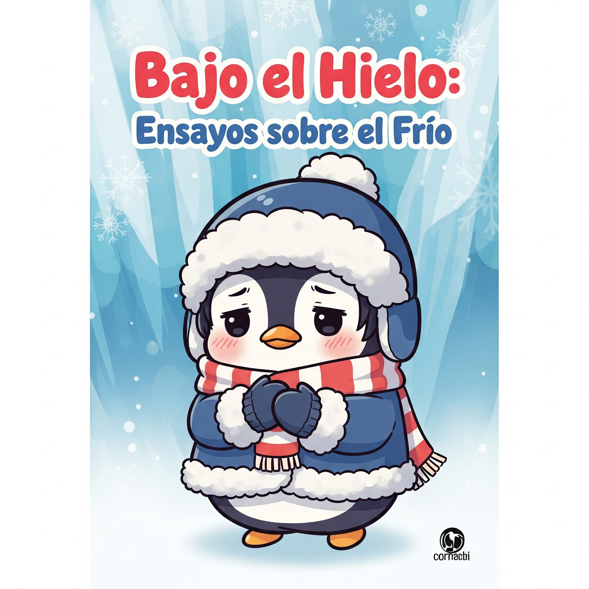
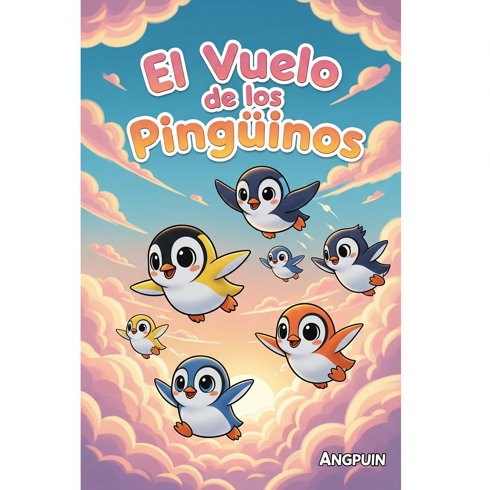

Archivo de Fragmentos
“En el principio, todo era hielo y silencio. Pero hasta el hielo guarda historias bajo su superficie.”— Crónicas del Polo Sur
“El tiempo es un copo de nieve: único, efímero, y parte de algo más grande.”— Archivo de los Pingüinos Sabios
Cronología del Hielo
1789
El Gran Deshielo del Archipiélago del Sur
Inspirado en la Revolución Francesa, los pingüinos del sur descubren el poder de la fraternidad y el cambio.
1917
La Aurora de los Pingüinos Rojos
En honor a la Revolución Rusa, los pingüinos del este sueñan con un mundo más justo bajo la aurora polar.
2000
La gran revolución de los pingüinos
Cansados de la represión, los pingüinos se levantan en una ola de protesta y creatividad.
La Academia de los Pingüinos
Profesor Plumífero
Hoy hablaremos del “Imperio de los Glaciares”, una época en la que los pingüinos gobernaban con sabiduría y aletazos firmes. Recuerden: la historia es como el hielo, ¡hay que mirarla con lupa!
Doctora Nieveblanca
En la lección de hoy: “El arte de deslizarse por la historia”. No teman a los resbalones, cada caída es un capítulo nuevo.
Club de Lectura Glacial

“Bajo el Hielo: Ensayos sobre el Frío”
Un compendio de pensamientos para leer junto a una taza de chocolate caliente, recomendado por la mismísima Reina de las Nieves.

“El Vuelo de los Pingüinos”
Una novela sobre sueños imposibles y migraciones del corazón. Ideal para noches largas de mucha nieve.
Notas del Archivista
Hoy el hielo cruje bajo mis pies, pero cada grieta es una historia esperando ser contada.
24 de junio, 2025Si alguna vez lees esto, recuerda: incluso en el frío más intenso, hay calor en las palabras.
24 de junio, 2025